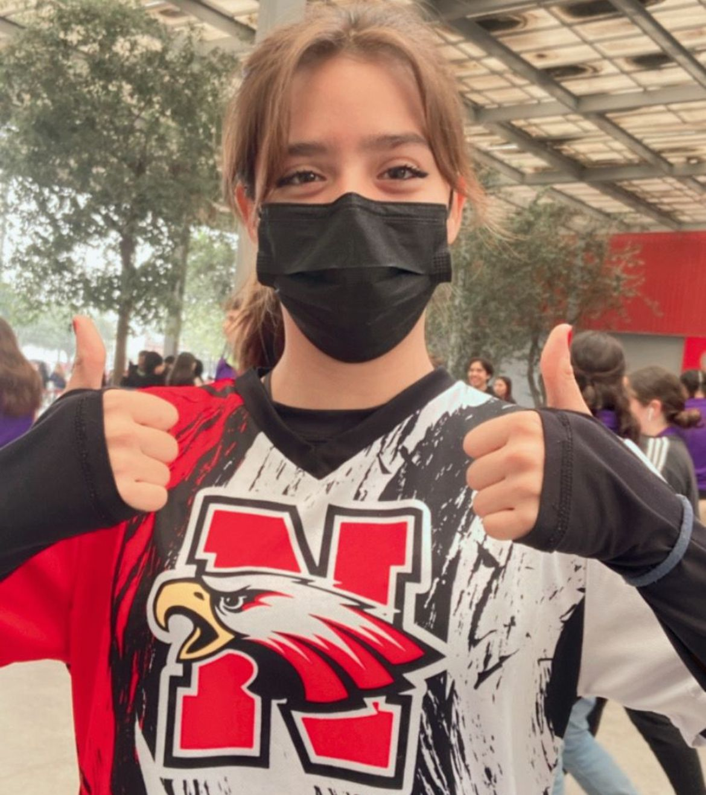
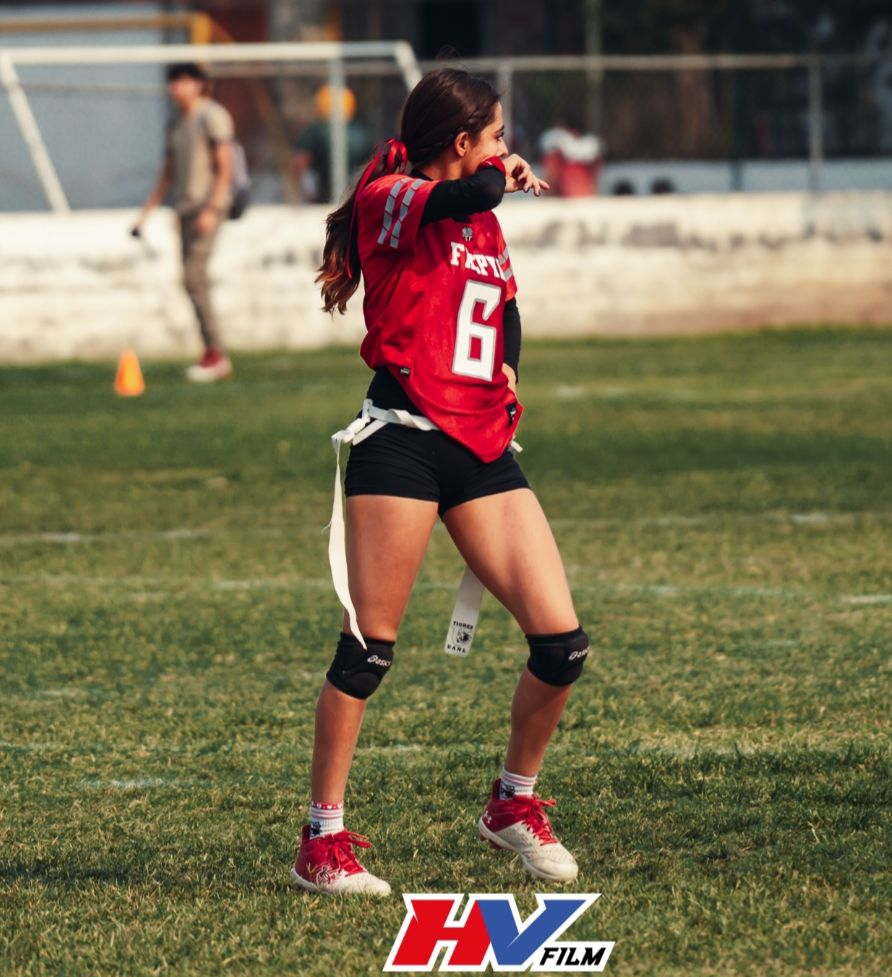
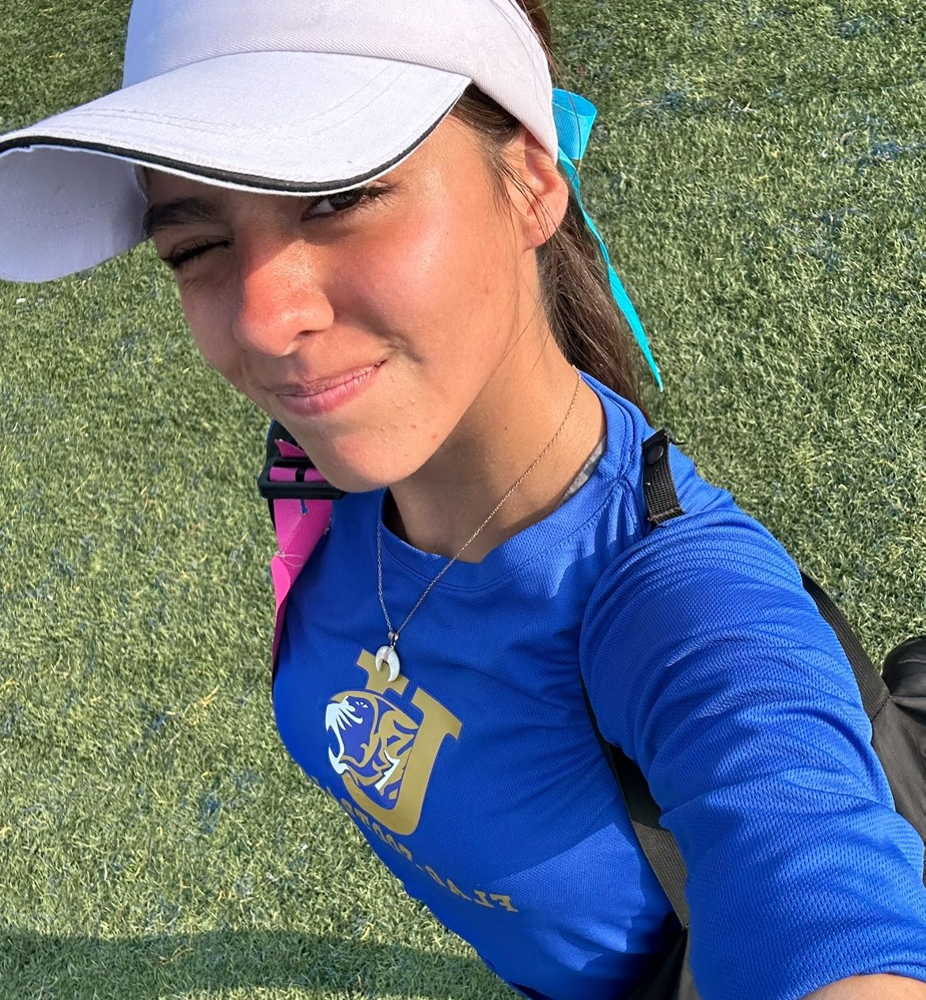
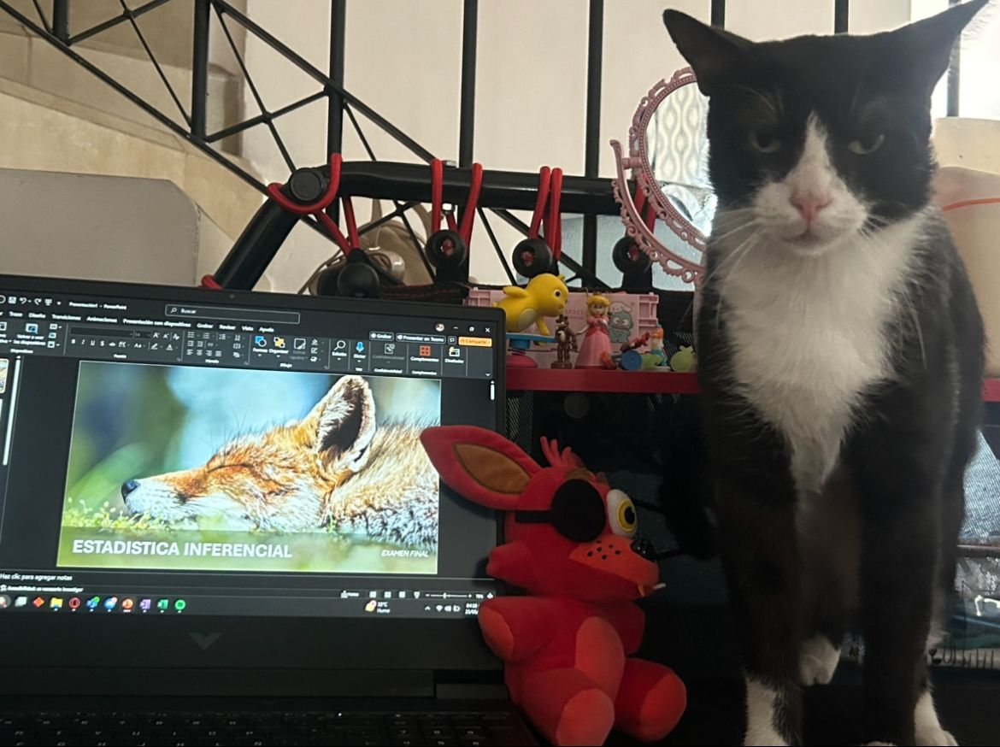
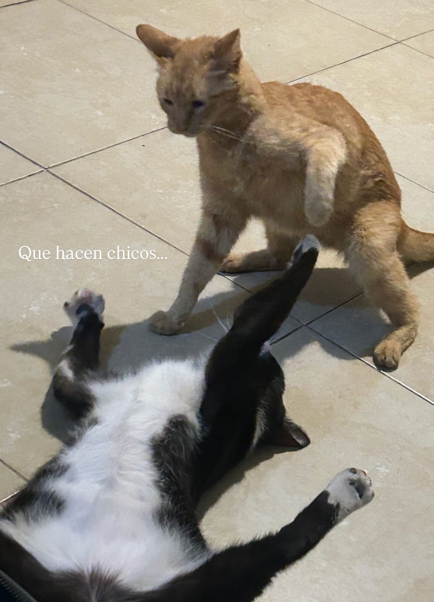
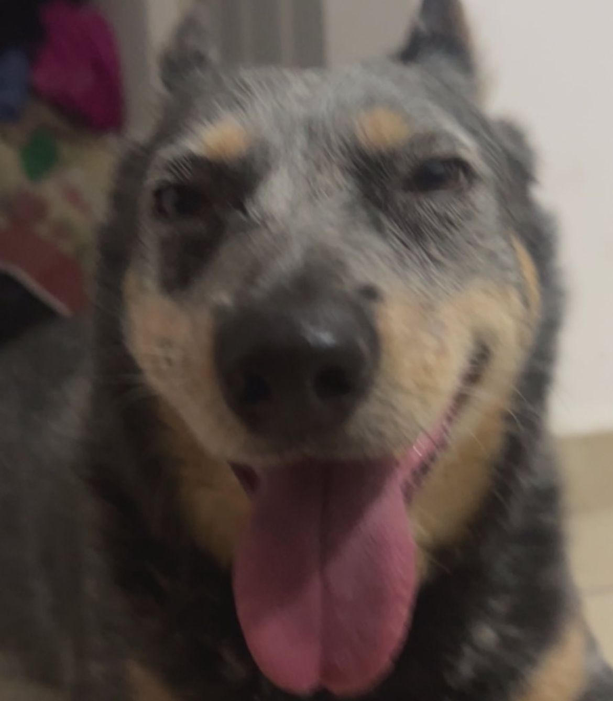

Valentina del Valle Luna
Estudiante Universitario de TI
Sobre mi
¡Hola! Soy estudiante de Facpya, tengo 19 años y me dedico a
estudiar en la mañana e ir al gimnasio después de clases,
siempre me ha gustado hacer actividad física, formé parte del
equipo de TIGRES JUVENIL de tochito 1 año y medio y también
represente a Facpya mi primer año en la facultad en el grupo B
y A.



Tomé la decisión de darme un descanso del deporte para poder
enfocarme más en mi carrera, pero también tengo otros hobbies
como dibujar, jugar videojuegos aunque también estoy
explorando nuevas posibilidades como la costura, horneo,
investigar sobre ciertas culturas y animales y tocar el
teclado.
Algo muy importante para mí actualmente es mi gato Oreo,
lo adopté al entrar a la facultad y le tengo un amor
grandísimo, casi siempre que estoy en mi escritorio
haciendo lo que sea, él me acompaña y le encanta acostarse
y abarcar todo el espacio que su gordura gatuna le
permita.

También tengo una gata viejita llamada Pipa y un perro
blue heeler llamado Firpo, a ellos también los quiero
demasiado y siento que soy una mezcla de cada una de mis
mascotas.


Mi experiencia en la carrera
A lo largo de estos 5 semestres, las materias que más me han gustado han sido relacionadas a la contaduría/finanzas, pero hablando sobre programación, en primer semestre aprendí bastante a desarrollar la lógica y las bases de la programación con la maestra Laura, gracias a su exigencia logré adquirir mis primeras habilidades y conocimientos sobre programación, de igual manera la maestra Edith me ayudó bastante a introducirme en la complejidad de las bases de datos, personalmente disfruto mucho aprender cosas nuevas sobre mi carrera que se sienten desafiantes en un inicio.
Mi perspectiva sobre el desarrollo web
En lo que llevo cursado de desarrollo web me encuentro muy fascinada con las posibilidades que nos abre esta disciplina, me divierte mucho hacer ese uso libre de mi creatividad y poder explorar lo que soy capaz de hacer y lo que estoy por aprender, siento que estamos llevando un muy buen plan de estudios y que nos permite absorber la información e indagar al ritmo que cada uno tiene.